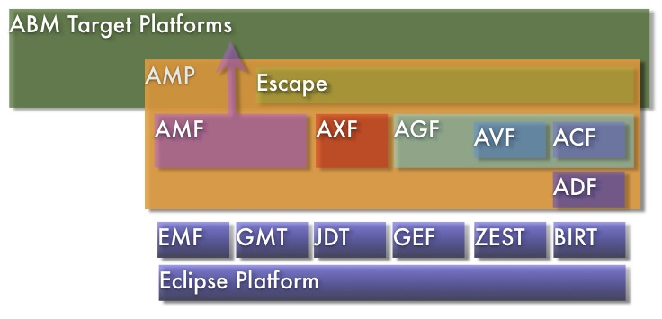

The AMP project provides extensible frameworks and exemplary tools for representing, editing, generating, executing and visualizing agent-based models (ABMs) and any other domain requiring spatial, behavioral and functional features. AMP has two main themes that complement but don't depend on one another: Modeling (AMF) and Platform (AXF, AGF, Escape).
The overall AMP architecture and Eclipse project dependencies are summarized below:
